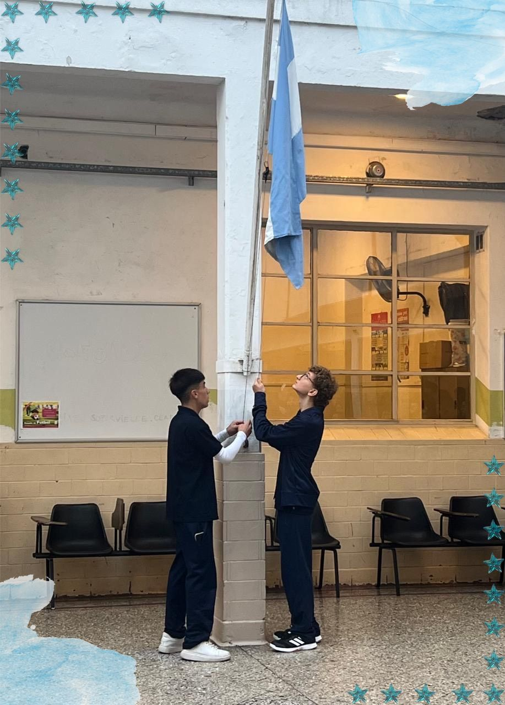

Discurso 2 de abril: Día del veterano y de los caídos en Malvinas
Por Prof. Mara Prieto
Estimadas autoridades, queridos/as colegas y queridos/as estudiantes: Hoy nos reunimos para recordar y rendir homenaje a quienes participaron en la Guerra de Malvinas, a los veteranos que regresaron y a aquellos que quedaron custodiando nuestras Islas. El 2 de abril de 1982 marcó un antes y un después en nuestra historia. En esa fecha, cientos de jóvenes argentinos, fueron enviados a luchar por la soberanía de nuestro país en condiciones adversas y con un profundo sentimiento patriótico. Las Malvinas no son solo un conjunto de islas; son símbolo de nuestra lucha y resiliencia. En 1982, nuestros soldados, ciudadanos expectantes de otrora, dejaron sus hogares y familias para enfrentar un desafío monumental. Con coraje y determinación, lucharon por lo que consideraban justo, por un pedazo de tierra que pertenece a nuestra nación. En el corazón de nuestra historia, los veteranos de Malvinas son verdaderos héroes anónimos, hombres y mujeres que, con valentía y determinación, se enfrentaron a una adversidad inimaginable. Muchos de ellos eran apenas adolescentes, y acudieron al llamado de la Patria dejando atrás sus sueños y anhelos para defender nuestra soberanía. Esta conmemoración no es solo un acto de recuerdo, sino también un llamado a la memoria y a la reflexión. Recordar Malvinas es reconocer el valor y la entrega de quienes combatieron, pero también es comprometernos con la construcción de un país que valore la paz, el diálogo y la justicia. Es comprender que detrás de cada nombre grabado en los monumentos hay una historia, una familia, sueños y esperanzas truncados por la guerra. Cada uno de los veteranos de Malvinas lleva consigo una historia marcada por el sacrificio y la lealtad. En las frías y desoladas islas, lucharon no solo por un territorio, sino por el amor a su patria, por sus familias y por un futuro en el que sus hijos pudieran vivir en paz. La experiencia de la guerra los transformó, dejando cicatrices en sus cuerpos y en sus almas, pero también forjando un espíritu indomable y un profundo sentido de unidad. Ese espíritu de cuerpo y camaradería se mantiene hasta nuestros días y da fe de ello la cantidad de centros de veteranos que abren sus puertas a la ciudadanía, no solo para honrar a quienes combatieron, sino también para difundir su historia y mantener viva la memoria. Hoy, a 43 años de aquel conflicto, reafirmamos nuestro derecho legítimo e irrenunciable sobre las Islas Malvinas, recordando que la soberanía se defiende con memoria, educación y diplomacia. La causa Malvinas no es solo un episodio del pasado, sino una cuestión presente que nos interpela como sociedad y como país. Como ciudadanos/as, tenemos la responsabilidad de mantener vivo el reclamo pacífico y de honrar a quienes lucharon con el respeto y la dignidad que merecen. Es fundamental que las nuevas generaciones conozcan la historia de Malvinas, que aprendamos de nuestro pasado para construir un futuro mejor. La educación cumple un papel esencial en este proceso, porque nos permite comprender los hechos desde una mirada crítica y reflexiva, promoviendo valores como la solidaridad, la unión y la justicia. Recordar esta fecha no solo implica rememorar la guerra, sino también honrar la memoria de aquellos/as que dieron su vida por nuestros sueños y esperanzas. Es un momento para reflexionar sobre el valor, la lealtad y el amor a la patria. Cada uno de nosotros, desde nuestra trinchera cotidiana, tiene la responsabilidad de mantener viva la llama de la memoria, de transmitir a las futuras generaciones, ustedes aquí presentes, la importancia de defender lo que es nuestro y de aprender de nuestro pasado. Hoy, más que nunca, necesitamos unirnos como sociedad. Las Malvinas nos enseñan que la lucha por lo que creemos justo nunca debe cesar. Debemos fomentar un diálogo constructivo y pacífico, pero también fortalecer nuestra identidad y nuestros lazos con nuestra historia. Los/as invito a que este aniversario nos inspire a ser mejores ciudadanos/as, a valorar la paz y a no olvidar el sacrificio de aquellos/as que nos precedieron. Que su legado nos impulse a construir un futuro donde la memoria y la justicia prevalezcan. Como así también a recordar que esos 649 héroes no dejaron su vida en vano, y que debemos honrarlos siempre, por siempre, a viva voz, para que sus nombres no queden en una lápida mortuoria o en algún bronce estéril. Su sacrificio nos recuerda que la lucha por la soberanía y la identidad nacional sigue vigente en nuestra historia y en nuestro presente. Porque las Malvinas fueron, son y serán argentinas.